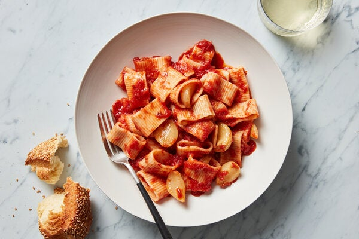

Pasta Marinara With 40 Cloves of Garlic

Yet Another Italian Classic
This vegan sauce may use the same ingredients as a light marinara, but it's hearty like a meat ragù. The richness is created by both the sheer volume of the garlic — 40 cloves — and the way it's handled. Smash the cloves to peel them easily (or buy peeled cloves), then braise them in oil so their stiff edges give way to a softer, gentler side and their sweet juices infuse the oil. Braised garlic is lovely with roasted chicken, incorporated into mashed potatoes, blended into salad dressing or in a curry. It also goes naturally with canned tomatoes that have been warmed just long enough to wake up their flavor. Think of this recipe as akin to a braised meat ragù, except the browned, slouchy main ingredient isn't meat, but, thrillingly, garlic.
Ingredients
- ¼ cup extra-virgin olive oil
- 40 garlic cloves, peeled
- Salt
- 1 pound rigatoni or other tubular pasta
- 1 (28-ounce) can crushed tomatoes or whole peeled tomatoes
- ½ teaspoon red-pepper flakes
Instructions
- In a large Dutch oven, heat the oil and garlic over medium. When the garlic is sizzling, stir occasionally until the garlic turns light golden and begins to stick to the bottom of the pot, 3 to 5 minutes.
- Season with salt, reduce heat to low, cover the pot, and cook, stirring occasionally, until the garlic is soft, 13 to 15 minutes. Meanwhile, bring a large pot of salted water to a boil. Add the pasta to the boiling water and cook until al dente. Reserve ½ cup pasta water, then drain.
- If using whole peeled tomatoes, break up the tomatoes with scissors or hands. Add the canned tomatoes and their liquid, as well as the red-pepper flakes, to the garlic, and season with salt. Increase heat to medium-high, partially cover the pot and cook until thickened and flavorful, 5 to 7 minutes.
- Add the pasta to the sauce and stir vigorously until the sauce coats the noodles, 1 to 2 minutes. Add pasta water as needed to loosen the sauce and help it cling to the noodles, and serve.